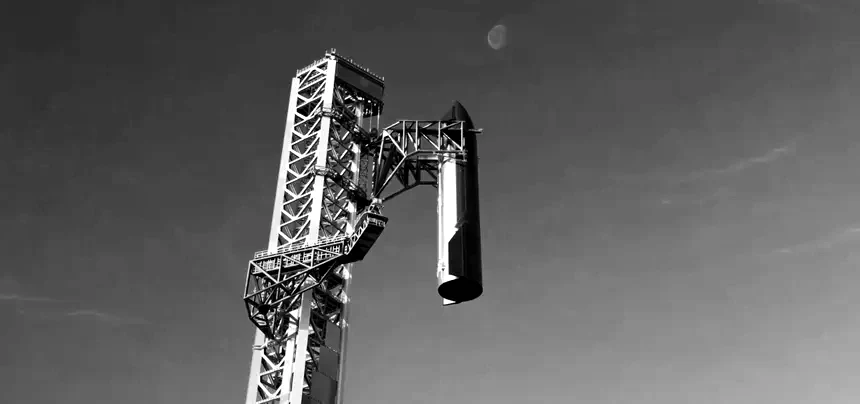

Starship · Flight 15 — 15 nov. 2026
Revenu de l'orbite, Starship est rattrapé en plein vol par sa tour de lancement
Une première mondiale : après 22 heures en orbite, le plus grand vaisseau jamais construit est cueilli par deux bras mécaniques.

Lancé le 13 novembre, le vaisseau Starship a été rattrapé le lendemain par les bras de sa tour de lancement, environ 22 heures après le décollage. C'est la première fois qu'un Starship revenant de l'espace est récupéré de cette manière.
Pendant ce vol, il a fait 14 tours de la Terre et déployé 26 satellites Starlink. Son bouclier thermique a bien résisté à la rentrée, preuve selon SpaceX que le vaisseau peut être entièrement réutilisé. Seul raté : le booster Super Heavy, détruit au retour.
Source : AP, relayé par Phys.org, 15 nov. 2026 — lire l'article ↗